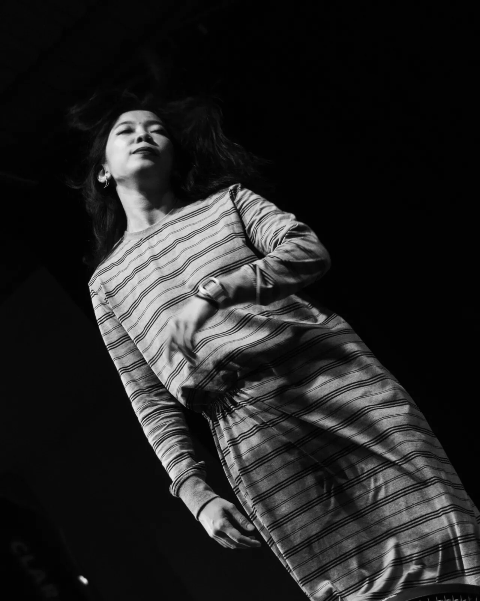
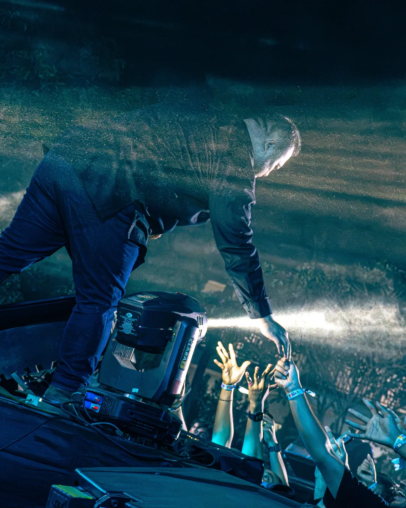
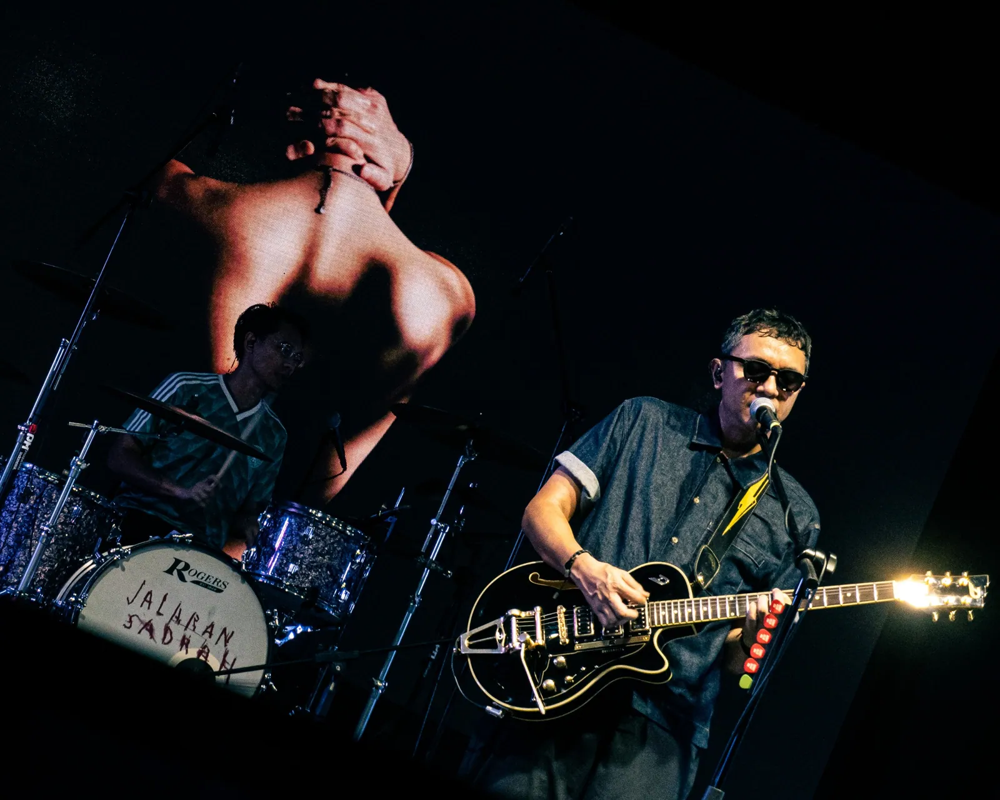

Selected Works.
Photographs, films and creative projects by Muhammad Nabil Firdaus. From the stage to the everyday.
Concert Photography
Live performance photographs from concerts, capturing movement, stage lighting, musicians and the energy of the crowd. Includes a Barasuara concert series.







Café & Commercial
Warm-toned product, food, coffee and everyday ambience photography for Toko Kopi Manis, Rembige, Mataram.


Graduation & Portraits
Graduation portraits balancing formal milestones with candid gestures and the atmosphere of the day.


Event Documentation
Documentary coverage of community and institutional events, including HIMIKOM UNRAM Festival and a gathering with representatives of the Palestinian Embassy at Nurul Hakim, Lombok.


Graphic Design
Selected editorial, informational and campaign visuals combining typographic hierarchy with photographic storytelling.


Videography & Short Films
Atmospheric social media video, promotional visual storytelling and documentary projects.
Toko Kopi Manis — Cinematic Café StoryShort-form video contentWatch ↗Toko Kopi Manis — Social Video
Brand storytellingWatch ↗Yatim Berseri — HIMIKOM UNRAM x YAKESMA NTB
Documentary / community eventWatch ↗